Active Directory Lab Build - Creating Organisational Units and Domain Administrators
This tutorial assumes you have completed the previous steps, i.e., creating a DC and installing AD.
Creating an Organisational Unit
An Organizational Unit (OU) is ultimately a container that we can use to 'organize' our resources. They may look like a traditional Windows folder at first, but when we start managing resource permissions, you'll see they are far more than that! Log in to your DC (BOSS) with your administrator account. Remember, mine was 'administrator' with a password of 'Password123!'. Within the server manager application, you need to select 'Active Directory Users and Computers'.
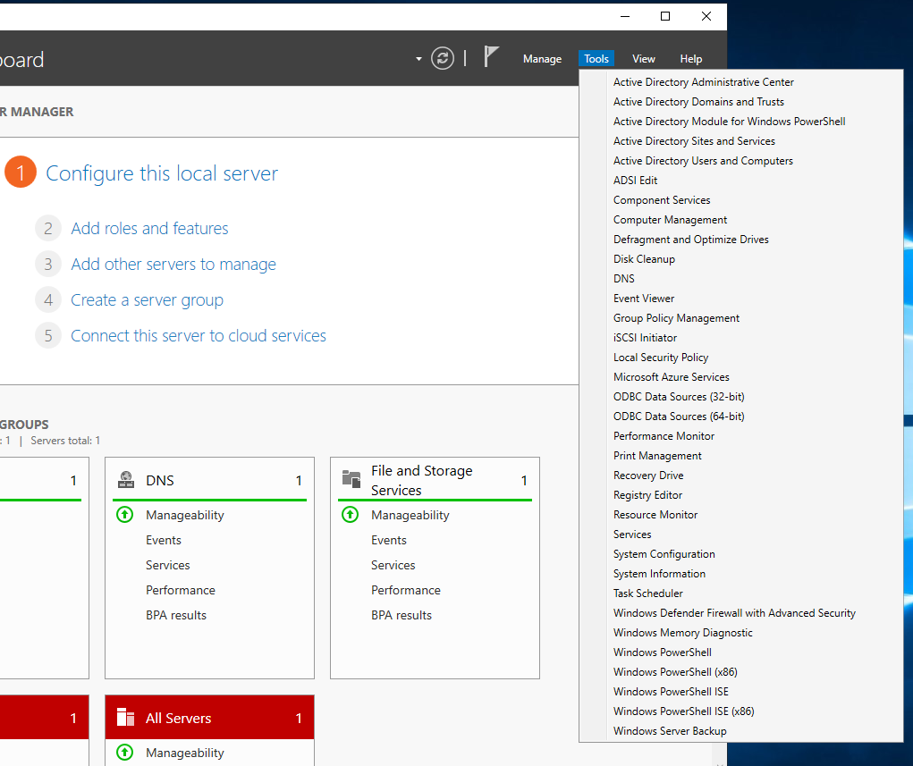
Select this option, and you will be given a new window in which you can see your domain; expand your domain. Right-click on your domain, select 'New' and then 'Organizational Unit'.
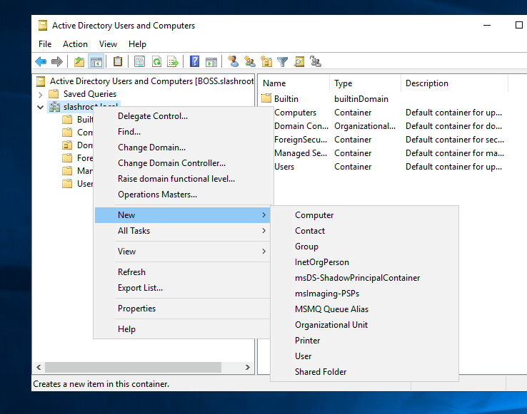
Our first OU is going to be a collection of our administrator accounts. For this reason, I have labeled my new OU 'Administrators'.
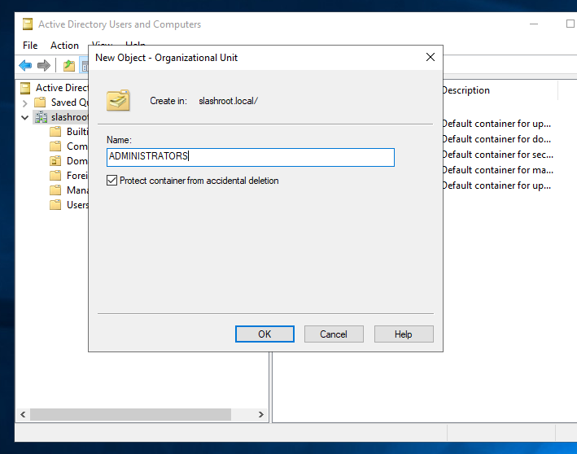
Creating an OU is that easy.
Creating a New Domain Administrator
Next, we are going to create a new domain administrator. If you're wondering why, when we already have an administrator account, it's always good practice to give everyone (especially administrators) individualized accounts for the purpose of granularizing permissions (i.e., does every administrator need every permission?) as well as for tracking and logging (i.e., we can see who did what when it came to domain administration). Imagine if every administrator used the same shared account; how would we ever know who did what! Right-click our new OU (ADMINISTRATORS) and select 'New' and then 'User'.
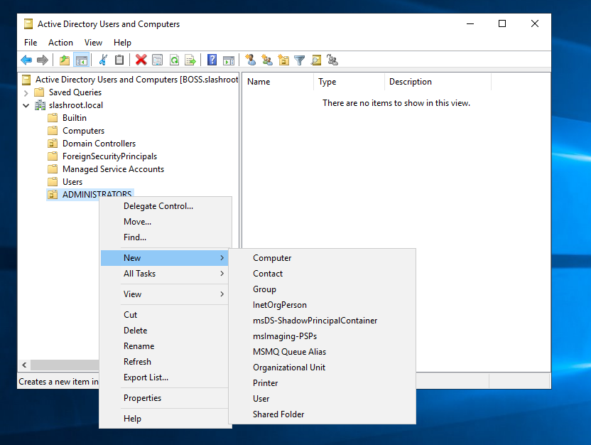
Enter some details for our new account, I've just used 'bob' in this example. A key one to note is the username, as this is what they will use to login.
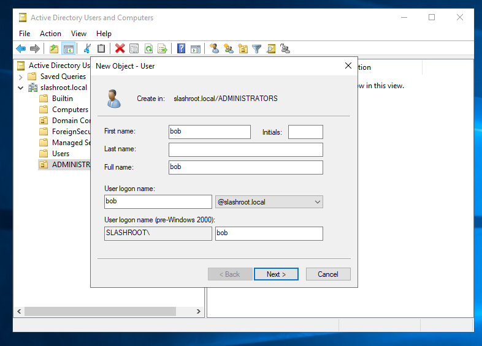
Select 'Next' and then enter a first-time login password. I've also selected 'Password never expires' as this lab environment is just for testing purposes. In reality, and depending on your organization's security policy, you would not select this option. I have used a terribly weak password again for this demo, 'Password456!'.
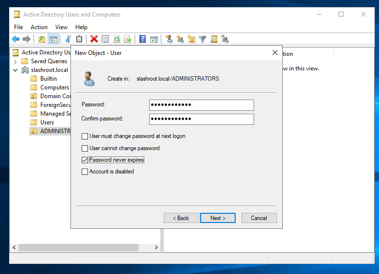
To finalize the account creation, select 'Next' and 'Finish'.
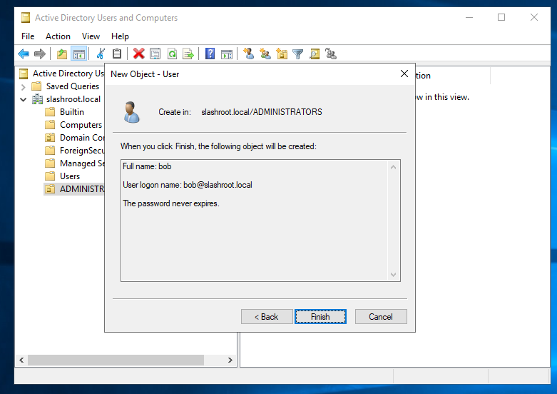
At this moment, our new account 'bob' is only a member of 'Domain Users' and has no real permissions. Therefore, we need to add permissions to his user account so that he can manage our domain, i.e., domain administrator. Open our 'ADMINISTRATORS' OU, right-click the new user account 'bob' and select 'Properties'.
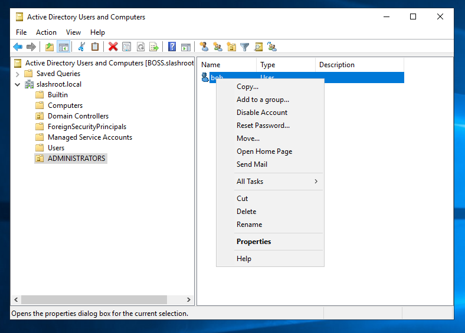
To add him to the Domain Administrators group, we need to edit his 'Member Of' tab. Select 'Member Of' and then 'Add'. A new window will pop up. We want to give this account complete control over our forest, domain, and schema, so we are going to add the 'bob' account to all three groups. A point to note at this stage, this is bad! In my experience, the enterprise admin group (exists on the root domain of the forest) is left empty or has a single 'break-glass' account attached, as this permission set has control over every domain in the forest. If nobody has this access, it requires collaboration between domain administrators to implement forest-wide changes, which are rare in their own right. However, this is a testing lab, so this account is being made into a 'god mode' account.
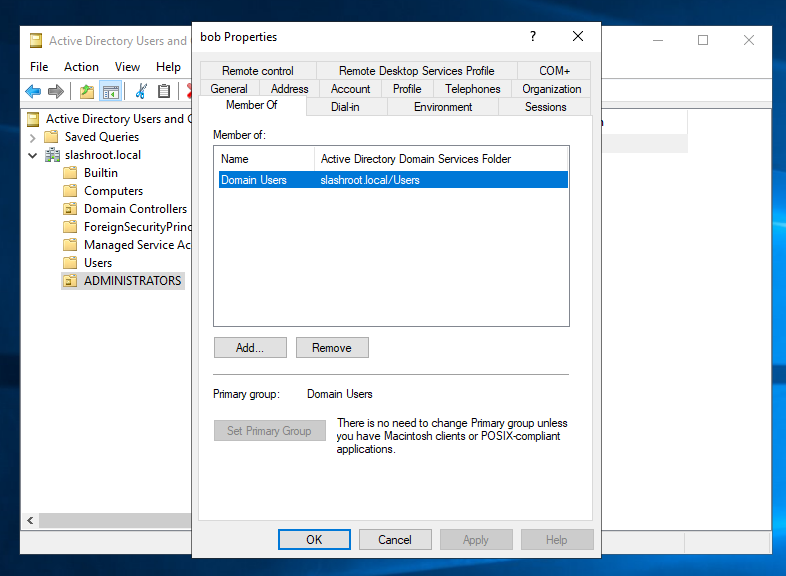
As the below screenshot shows, I have typed the following object names, separated by a semi-colon into the window:
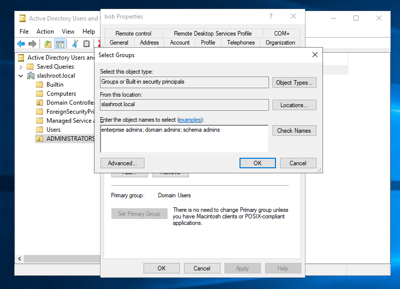
By selecting 'Check Names', the system will auto-populate.
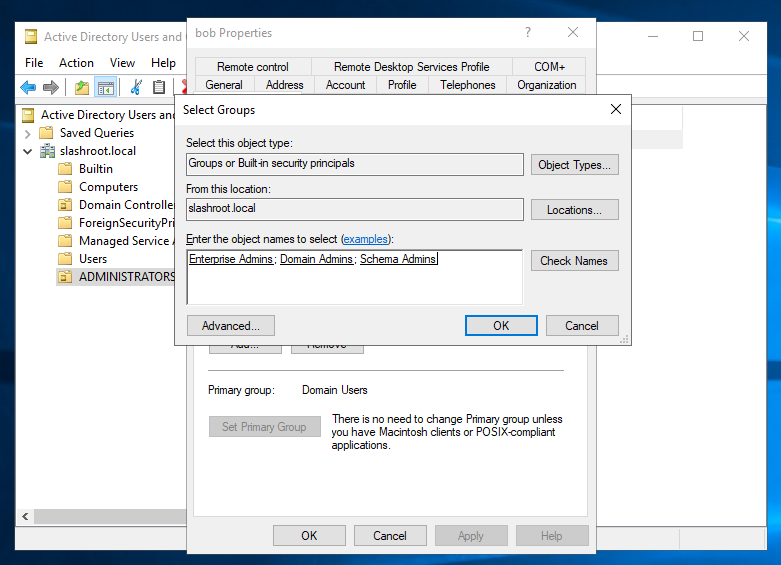
Click 'Ok' and your new permissions have now been granted to the user account 'bob'.
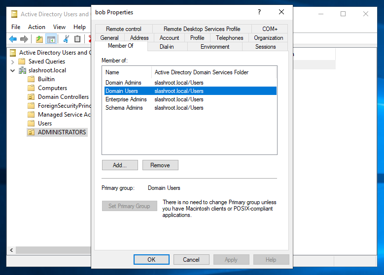
That is it! We can now log out of the 'administrator' account and log back in as 'bob'. Ensure you select 'Other user' and enter 'bob' as the username. Log in with the password set; 'Password456!' in my case.
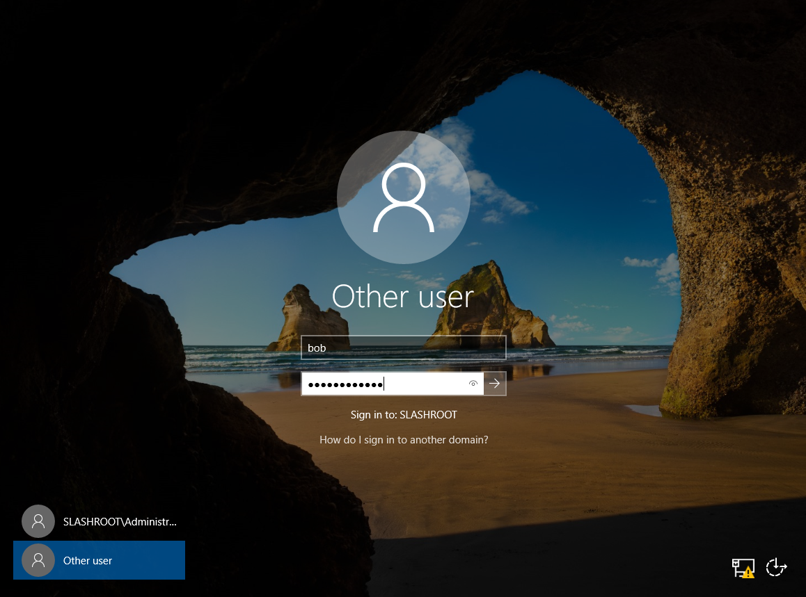
Once logged in, you will have full access to administer the domain.
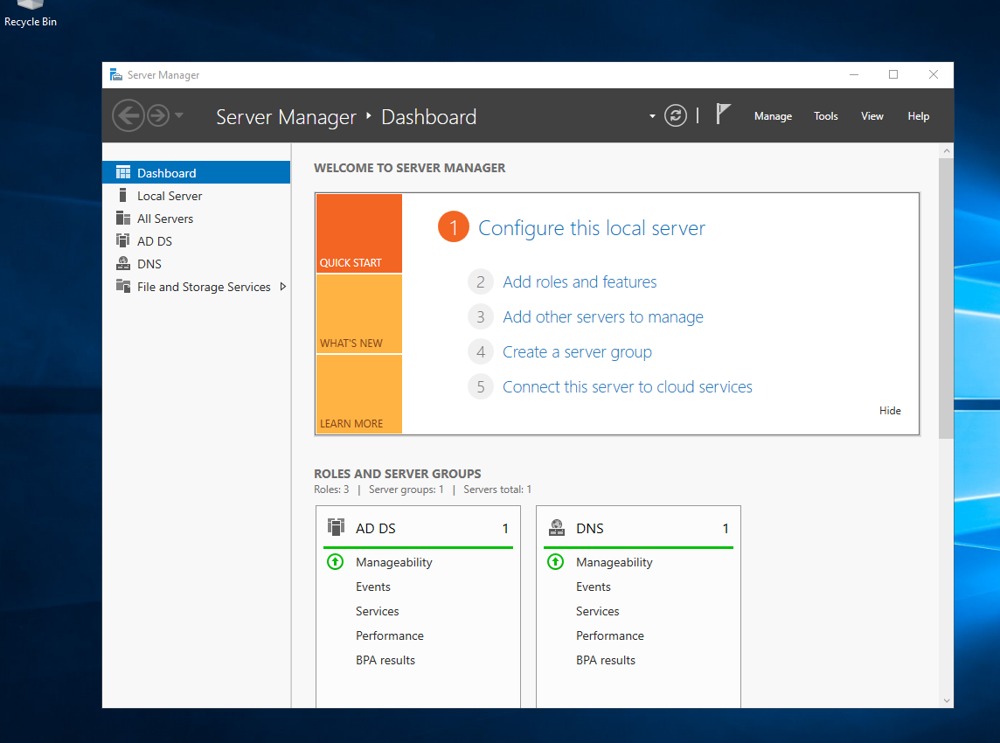
This concludes this step in our domain configuration, and we will now use this account to administer our domain from this point on.